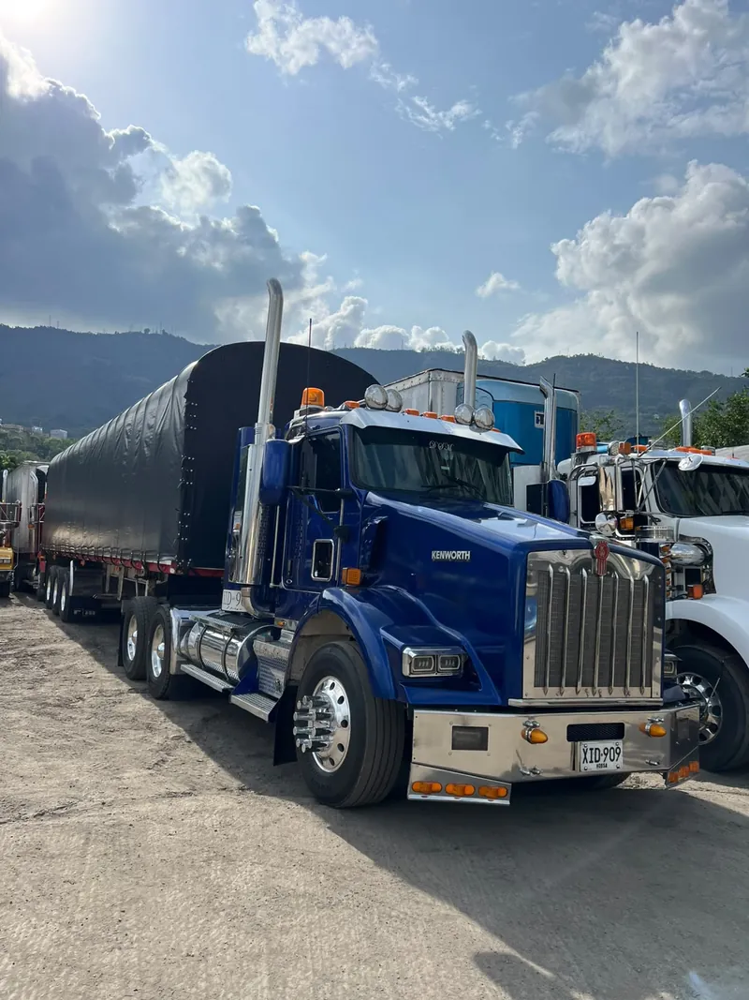
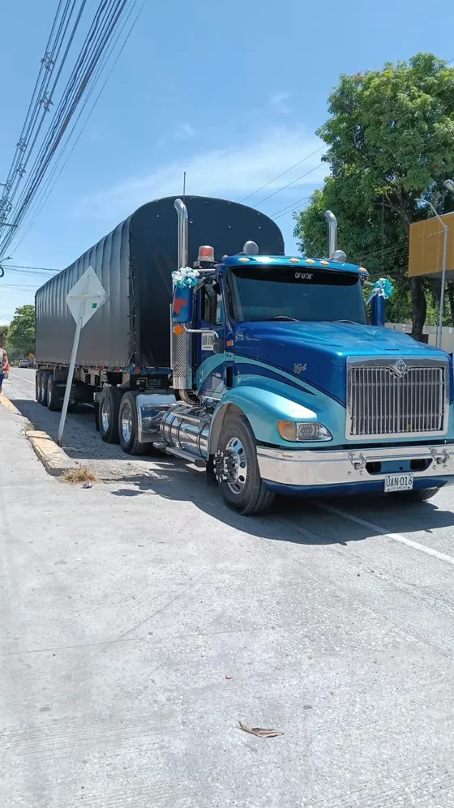
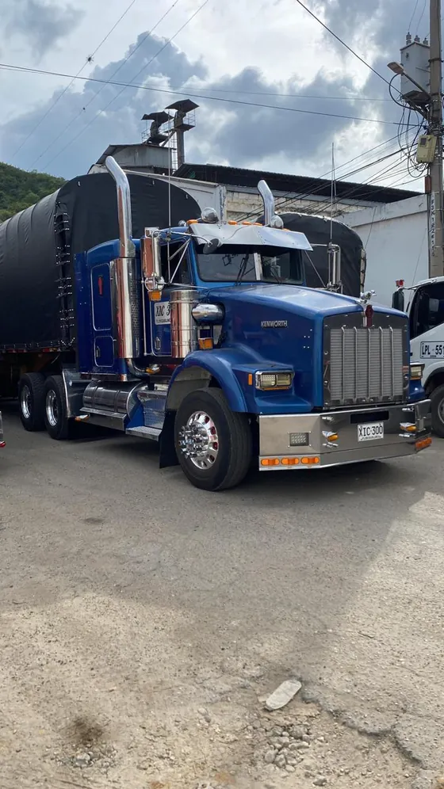
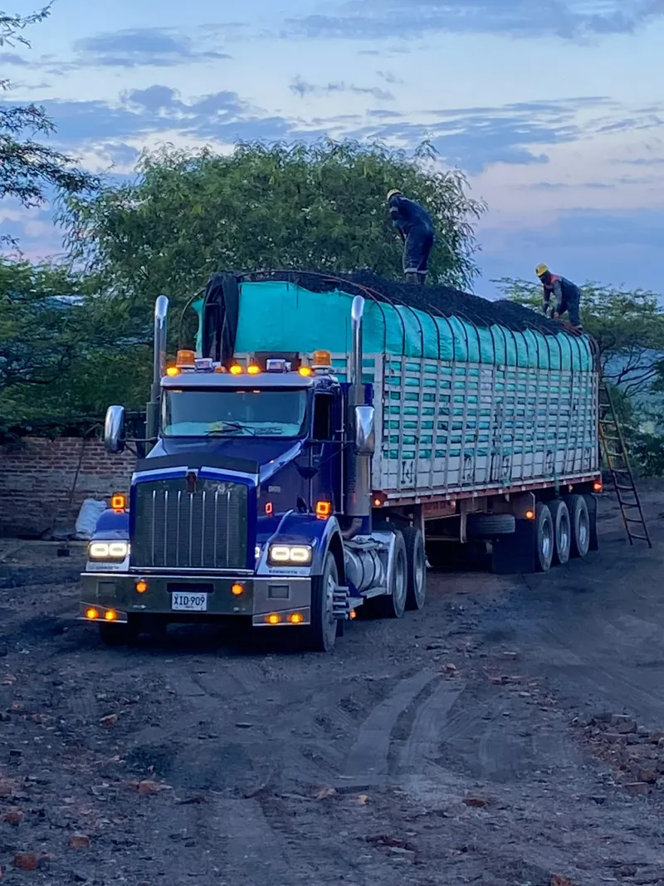
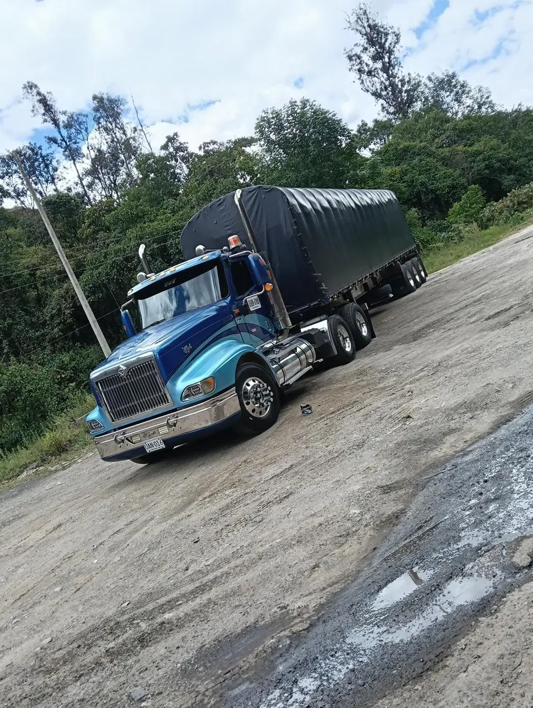
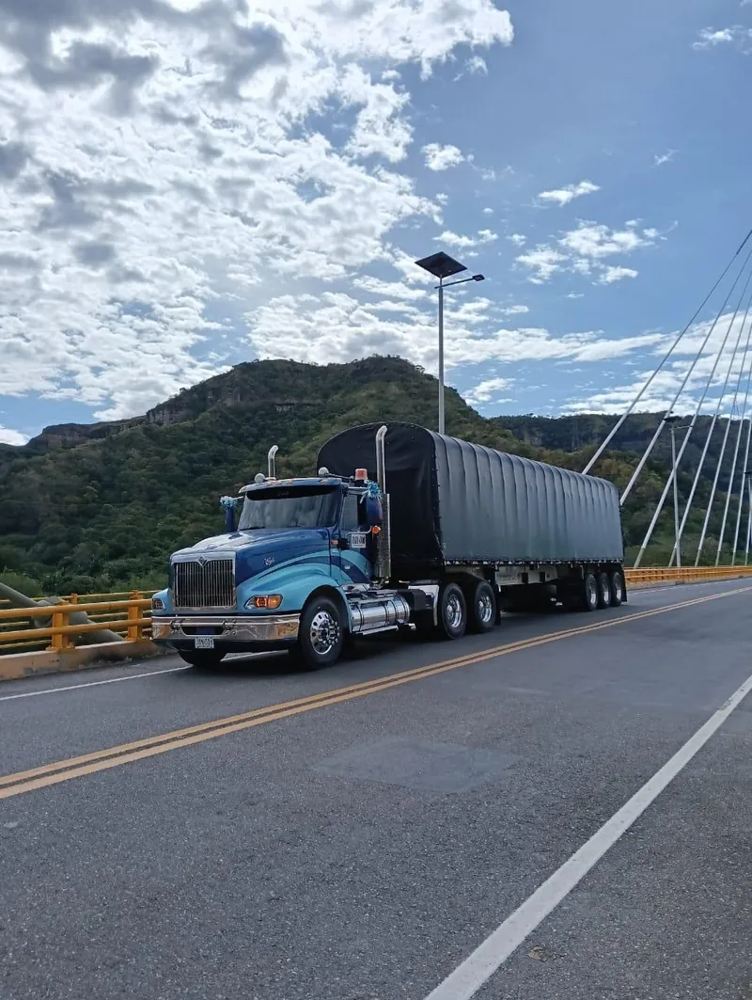
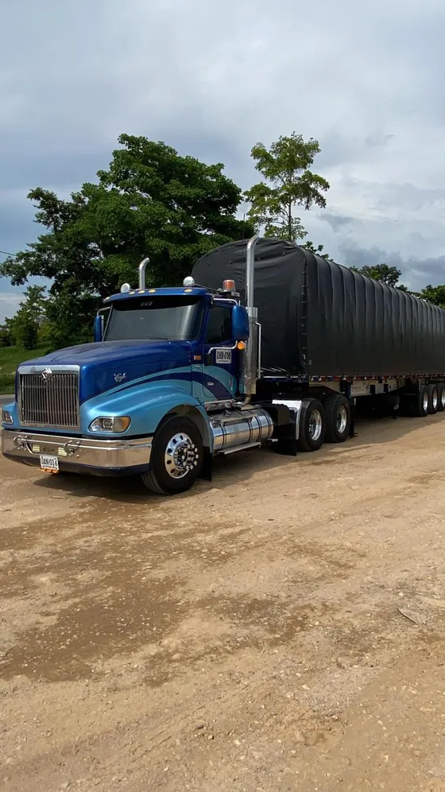
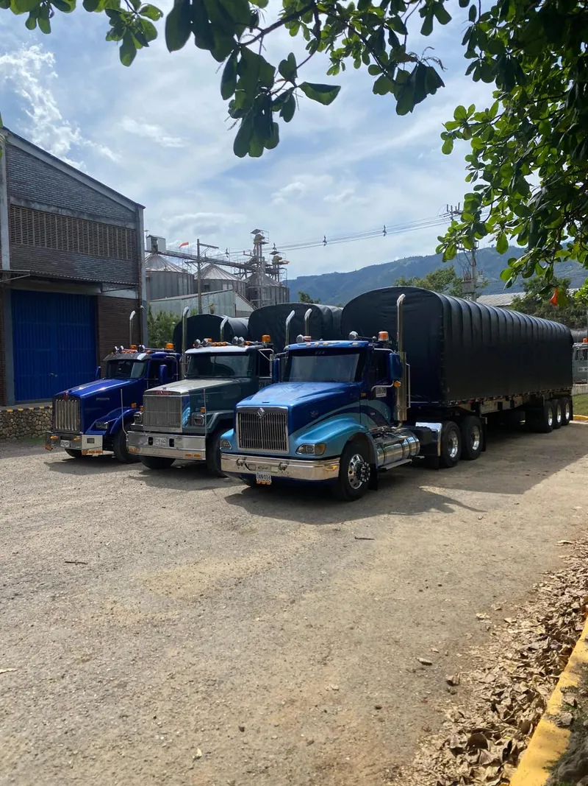

Tractomulas
Tractomula
Tractocamión con semirremolque para despachos completos y carga de mayor peso entre ciudades.
Tractomulas de CTICOL en operación: rastreo GPS 24/7, mercancía amparada por pólizas y conductores capacitados.








Flota propia y tercerizada de turbos, camiones sencillos y tractomulas. Filtre por tipo de vehículo.
Tractomulas
Tractocamión con semirremolque para despachos completos y carga de mayor peso entre ciudades.

Camiones sencillos
Camión rígido de dos ejes para cargas medianas en trayectos urbanos y entre ciudades.

Camiones turbo
Camión liviano para despachos pequeños, entregas urbanas y acceso a zonas con restricciones para vehículos grandes.
Nuestros vehículos tienen rastreo satelital las 24 horas, los 7 días de la semana, durante todo el trayecto.
Su carga viaja amparada por pólizas de seguro de mercancía.
Conductores preparados para el manejo seguro de la carga y la operación en carretera.
Turbos, camiones sencillos y tractomulas para ajustarnos al tamaño de cada despacho.
Cuéntenos el peso y las medidas de su carga y le indicamos la configuración adecuada.